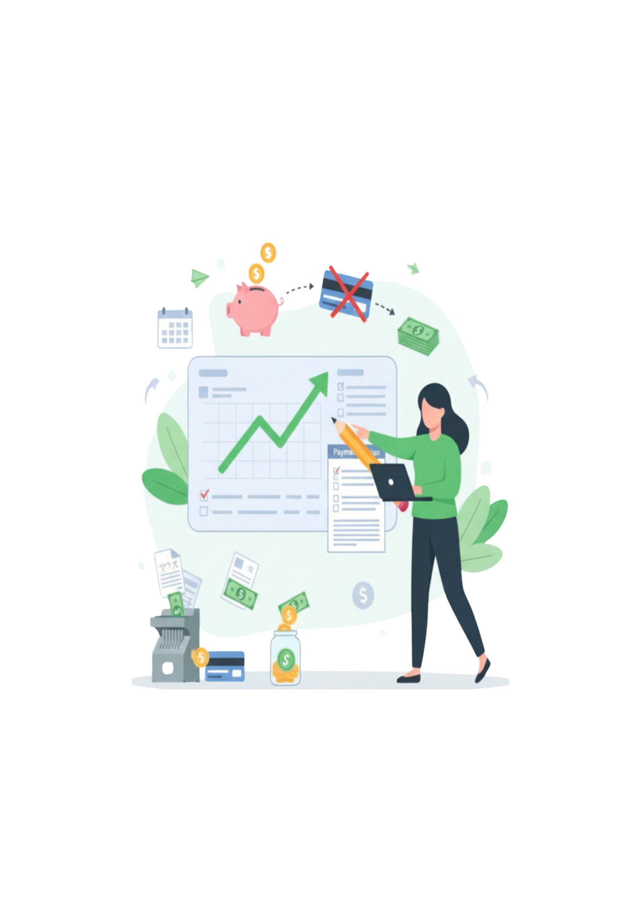

Dívidas e Planejamento
Estratégias para não se endividar
A regra de ouro das finanças é simples: gaste menos do que você ganha. O endividamento surge quando essa regra é quebrada, muitas vezes por falta de visibilidade ou por um imprevisto. Para evitar isso, o primeiro passo é ter clareza total sobre seu fluxo de caixa.
Principais Táticas:
- Conheça seus números: Use um app ou planilha para rastrear todos os seus gastos por 30 dias. Você pode se surpreender ao ver para onde o dinheiro está indo.
- Crie uma Reserva de Emergência: Esta é sua principal defesa. A maioria das dívidas "ruins" começa com um imprevisto (carro quebrou, problema de saúde). Tenha o equivalente a 3-6 meses de seu custo de vida guardado em um local de fácil acesso.
- Cuidado com o Cartão de Crédito: Use o cartão como uma ferramenta de pagamento, não como uma extensão da sua renda. Pague a fatura total sempre. Evite ao máximo o pagamento mínimo, pois os juros (rotativo) são os mais altos do mercado.
- Viva um degrau abaixo: Se você recebeu um aumento, não aumente seu custo de vida imediatamente. Use esse extra para acelerar seus investimentos ou sua reserva.
Diferença entre dívida boa e dívida ruim
Sim, nem toda dívida é um vilão. A diferença fundamental está no propósito do dinheiro e no seu potencial de retorno. Entender isso é crucial para usar o crédito a seu favor.
Dívida Ruim (Passivos)
É aquela usada para comprar itens de consumo que perdem valor rapidamente e não geram renda. Elas tiram dinheiro do seu bolso. Pense em:
- Juros do cartão de crédito por compras de roupas ou jantares.
- Financiamento de um carro que desvaloriza assim que sai da loja (especialmente se for para uso pessoal).
- Empréstimos pessoais para cobrir o dia a dia ou pagar outras dívidas de consumo.
Dívida Boa (Ativos)
É um investimento. Você pega dinheiro emprestado para adquirir algo que tende a se valorizar ou a gerar mais renda no futuro. Elas colocam (ou têm o potencial de colocar) dinheiro no seu bolso. Exemplos clássicos incluem:
- Um financiamento imobiliário (você constrói patrimônio e pode gerar renda com aluguel).
- Um empréstimo para abrir ou expandir um negócio com plano sólido.
- Um financiamento estudantil para uma carreira com alta demanda e bom salário.
Como criar um plano financeiro mensal e anual
O planejamento é o mapa que leva você da sua situação atual para seus objetivos. Sem ele, você está apenas "torcendo" para dar certo. Vamos dividir em passos práticos:
Plano Mensal (Orçamento)
- Liste sua Renda Líquida: Quanto dinheiro *realmente* cai na sua conta (depois de impostos e descontos).
- Liste Custos Fixos: São as contas que não mudam (ou mudam pouco): aluguel, condomínio, internet, mensalidades.
- Liste Custos Variáveis: Aqui mora o perigo e a oportunidade. Supermercado, delivery, transporte (gasolina/app), lazer. Defina um *teto* para cada categoria.
- Defina Metas (Pague-se Primeiro): Antes de gastar com variáveis, defina quanto você vai guardar para a reserva de emergência, investimentos ou quitação de dívidas. Trate isso como um custo fixo.
- Analise o Saldo: (Renda) - (Fixos) - (Variáveis) - (Metas) = ? O ideal é que seja zero (orçamento base zero). Se sobrar, aloque em metas. Se faltar, corte variáveis.
Plano Anual
O plano anual é o seu orçamento mensal visto de cima. Pegue seu plano mensal e multiplique por 12. Em seguida, adicione os gastos que só acontecem uma vez por ano: IPVA, IPTU, seguro do carro, 13º salário (como renda extra), férias planejadas, etc. Isso evita surpresas em meses específicos e dá uma visão clara do seu ano.
